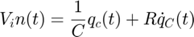
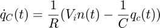
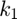
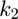
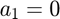
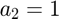
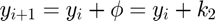
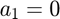
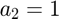
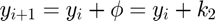

MIDPOINT METHOD
function [Tout,Vout] = midpoint(qc0,h,tf,Vin,R,C)
t = 0;
Nsteps = round((tf-t)/h); % number of steps to take
Tout = t:h:tf;
q = zeros(1,Nsteps+1);
Not enough input arguments. Error in midpoint (line 6) Nsteps = round((tf-t)/h); % number of steps to take
We first have to write the given equation for V_in in terms of q':

is equivalent to

f = @(t,q) (1/R)*(Vin(t) - (q/C));
% store intial condition
q(1) = qc0;
To implement the midpoint method we must find the coefficients  and  of the increment function  , having the midpoint method  and . We still have to compute since is defined in terms of . Then the value of the next iteration will be $
, having the midpoint method  and . We still have to compute since is defined in terms of . Then the value of the next iteration will be $
for i = 1:Nsteps k1 = h*f(Tout(i),q(i)); k2 = h*f(Tout(i)+0.5*h,q(i)+0.5*k1); q(i+1) = q(i) + k2; end Vout = q./C;
end